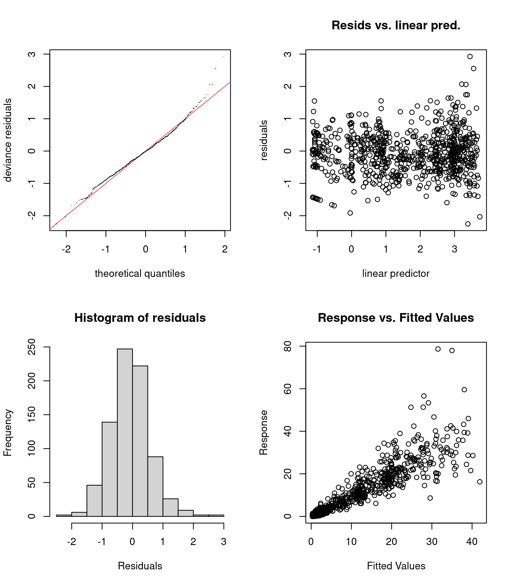

Chapitre 9 Autres distributions
Nous avons besoin d’une distribution de probabilité qui permet à la variance d’augmenter avec la moyenne. Une famille de distributions qui possède cette propriété et qui fonctionne bien dans un GAM est la famille Tweedie.
Une fonction de liaison commune pour les distributions Tweedie est le \(log\).
Comme dans un GLM, nous pouvons utiliser l’argument family = dans gam() pour ajuster des modèles avec d’autres distributions (y compris des distributions telles que binomial, poisson, gamma etc).
Pour en savoir plus sur les familles disponibles dans mgcv :
9.1 Défi 3
- Ajuster un nouveau modèle
smooth_interact_twavec la même formule que le modèlesmooth_interact, mais avec une distribution de la famille Tweedie (au lieu de la distribution Normale) etlogcomme fonction de liaison. Pour ce faire, on peut utiliserfamily = tw(link = "log")dansgam(). - Vérifier le choix de
ket la visualisation des résidus pour le nouveau modèle. - Comparer
smooth_interact_twavecsmooth_interact. Lequel est meilleur?
Pour vous rappeler, voici notre modèle smooth_interact:
# Indice! Parce que la distribution normale est le
# paramètre par défaut, nous n'avons pas encore spécifié la
# distribution dans cet atelier.
# Voici comment nous écririons le modèle pour spécifier la
# distribution normale :
smooth_interact <- gam(Sources ~ Season + s(SampleDepth, RelativeDepth,
k = 60), family = gaussian(link = "identity"), data = isit,
method = "REML")9.1.1 Défi 3: Solution
1. Premièrement, construisons un nouveau modèle avec une distribution Tweedie un lien log.
smooth_interact_tw <- gam(Sources ~ Season + s(SampleDepth, RelativeDepth,
k = 60), family = tw(link = "log"), data = isit, method = "REML")
summary(smooth_interact_tw)$p.table## Estimate Std. Error t value Pr(>|t|)
## (Intercept) 1.3126641 0.03400390 38.60333 8.446478e-180
## Season2 0.5350529 0.04837342 11.06089 1.961733e-26## edf Ref.df F p-value
## s(SampleDepth,RelativeDepth) 43.23949 51.57139 116.9236 02. Vérifier le choix de k et la visualisation des résidus pour le nouveau modèle.
Ensuite, on devrait vérifier le choix des dimensions de bases k:
## k' edf k-index p-value
## s(SampleDepth,RelativeDepth) 59 43.23949 1.015062 0.83Ainsi que la visualisation des résidus, pour valider que la distribution Tweedie est appropriée:

##
## Method: REML Optimizer: outer newton
## full convergence after 3 iterations.
## Gradient range [-0.0007646676,0.0001600484]
## (score 1791.138 & scale 0.4355231).
## Hessian positive definite, eigenvalue range [12.02444,492.4714].
## Model rank = 61 / 61
##
## Basis dimension (k) checking results. Low p-value (k-index<1) may
## indicate that k is too low, especially if edf is close to k'.
##
## k' edf k-index p-value
## s(SampleDepth,RelativeDepth) 59.0 43.2 1.02 0.76Les résidus semblent mieux distribués, mais il est évident que le modèle manque encore quelque chose. Il pourrait s’agir d’un effet spatial (longitude et latitude), ou d’un effet aléatoire (par exemple basé sur Station).
3. Comparer smooth_interact_tw avec smooth_interact. Lequel est meilleur?
## df AIC
## smooth_interact 49.47221 4900.567
## smooth_interact_tw 47.86913 3498.490L’AIC nous permet de comparer des modèles qui sont basés sur des distributions différentes!
Le score AIC pour smooth_interact_tw est beaucoup plus petit que celui de smooth_interact. Utiliser une distribution Tweedie au lieu d’une distribution Normale améliore beaucoup notre modèle!